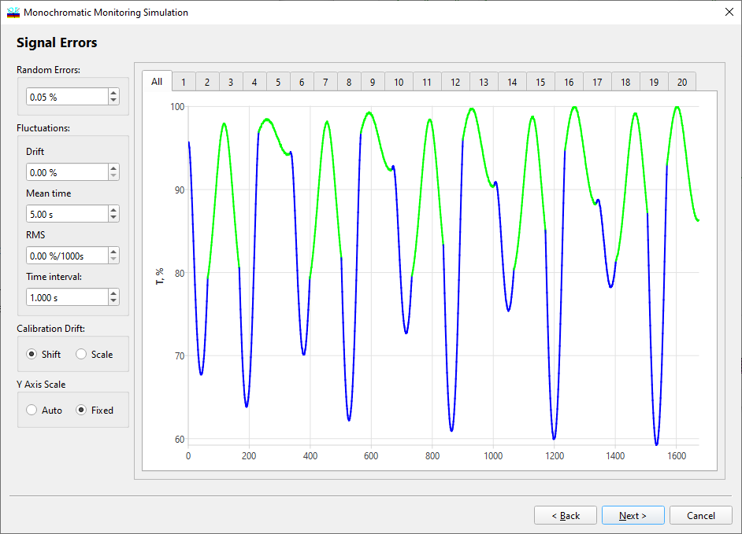

Monochromatic Monitoring Simulation - Singal Errors
Monochromatic Monitoring Simulation - Signal Errors
Navigation: OptiLayer Menu Commands > Analysis Menu > Monochromatic Monitoring Simulation >
Monochromatic Monitoring Simulation - Signal Errors
` <single_par_deviations.html>`__ ` <monochromatic_monitoring.html>`__ ` <single_wavelength_simulation.html>`__

At the third step of the dialog, errors in measured online data are specified.
The Random errors entry field specifies the level of random noise in online data.
The Fluctuations group of entry fields allows the user to specify piece-wise linear fluctuations of measurement data over time. The Drift entry field specifies the level of additive measurement data drift in a random time interval specified by the next two fields. The value in the Mean time entry field is the mean value of this interval, and the value in the RMS field is the standard deviation of this interval.
The Calibration Drifts group of entry fields is used to simulate shifts and calibration drifts of online spectrophotometric measurements over time. The rate of shift or calibration drift is specified in the Rate, %/1000s entry field. If the Shift radio button is checked, then measurement data is shifted by a% in 1000 seconds. If the Scale radio button is checked, a measurement data calibration drift is simulated. This means that the baseline transmittance of an open optical path is measured as 100% + a% in 1000 seconds after its calibration as 100%. The Recalibration time entry field allows the user to specify the time interval in which recalibration of the online monitoring device is done.
The Time interval entry field allows specifying how often monochromatic measurements are performed.
The Update button performs a repaint operation of the simulated signals in the right pane.
See also: